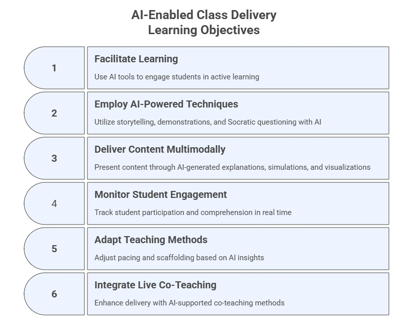

5. AI-Enabled Class Delivery#
Enacting the instructional plan with flexibility, engagement, and real-time AI support
This phase is about enacting the instructional plan with flexibility and engagement. It focuses on delivering instruction dynamically and responsively while integrating generative AI tools to enhance engagement, learning, and personalization. Strategies covered include facilitating active, student-centered learning, using storytelling and examples, employing technology and AI tools for content delivery, monitoring engagement and comprehension in real time, and adapting pacing and methods responsively.
Learning Objectives#
After completing this module, participants will be able to:
Facilitate active, student-centered learning using generative AI tools.
Employ storytelling, demonstrations, examples, and Socratic questioning powered by AI.
Use AI to deliver content through multimodal explanations, simulations, and visualizations.
Monitor student engagement, participation, and comprehension in real time.
Adapt pacing, scaffolding, and teaching methods based on AI insights.
Integrate live co-teaching AI methods for enhanced delivery.

5.1 Facilitate Active, Student-Centered Learning#
Purpose#
Use GenAI to design collaborative and interactive activities that foster engagement and critical thinking.
Prompt Template - Instructional
Suggest three learning strategies that leverage generative AI for a course on [Course Title].
Explain how tools like ChatGPT, Claude or Perplexity support group work or collaborative tasks.
Include timing and instructions.
Example Activity 2. AI Debate Partner#
Overview#
Students debate an issue where the AI acts as a role-based debating partner, allowing students to practice argumentation, critique, and evidence use.
Prompt for Students
You are an expert who argues *in favor* of the position:
[Insert debate statement]
Provide:
1) A clear argument,
2) Evidence-based support,
3) One counterargument you expect from the opposing side.
Then students ask:
Now switch roles and argue *against* the same statement.
Debrief Questions#
Which side did AI argue more convincingly?
Did the AI hallucinate evidence?
How would you strengthen or refute its claims?
Instructor-Led Group Exchange#
Students form groups of three:
Student A: presents one side
Student B: presents the opposing side
Student C: acts as the evaluator/referee
Example Activity 3. AI Error Analysis#
Overview#
Students analyze AI-generated mistakes to deepen understanding and improve critical evaluation. This is powerful for math, programming, statistics, logic, or technical writing.
Instructor Preparation Prompt Use this to generate deliberate AI mistakes:
Produce a partially incorrect explanation of [Topic].
Include:
- One factual error,
- One reasoning error,
- One ambiguous or vague statement.
Do NOT label the errors.
Student Task#
Students must:
Identify each type of error
Correct them
Rewrite the explanation with improved clarity
Reflection#
Why do these errors occur?
Which error type is hardest to detect?
How can students avoid incorporating AI mistakes into their own work?
Example Activity 4. Multi-Tool Comparison Challenge#
Overview#
Students compare outputs from multiple AI tools to evaluate reasoning quality, evidence, clarity, and limitations.
Activity Instructions#
Students run the same prompt in each tool (select any set of tools you want to compare):
Explain [Course Topic] in 3 levels: beginner, intermediate, advanced.
Include:
- One real-world example,
- One misconception,
- One analogy.
Analysis Table (Students Complete)#
Criteria |
Tool 1 |
Tool 2 |
Tool 3 |
|---|---|---|---|
Clarity |
|||
Accuracy |
|||
Depth |
|||
Use of Evidence |
|||
Misconceptions |
|||
Creativity |
Deliverable#
Students present:
Which tool performed best in which category
One improvement each tool needs
Whether the results were consistent with expectations
5.2 Use Storytelling, Examples, Demonstrations, and Socratic Questioning#
Focus#
This section focuses on teaching strategies, such as storytelling, examples, demonstrations, and Socratic questioning, as methods for fostering deeper understanding, curiosity, and critical thinking during class delivery. Generative AI tools are referenced only as supports for implementing these pedagogical techniques, not as standalone content-delivery systems (which is the focus of Section 5.3).
Purpose#
Use generative AI to create engaging narratives, structured examples, conceptual demonstrations, and Socratic questioning sequences that enhance teaching clarity and stimulate higher-order thinking.
These strategies help you:
contextualize abstract ideas through stories
scaffold understanding with multi-tiered examples
visualize processes through demonstrations
guide reasoning through inquiry-based dialogue
AI accelerates the creation of these elements while allowing you to customize them for different audiences, difficulty levels, or class modalities.
Note: All foundational models’ apps and general purpose models should be capable of creating the assets described here. We sampled some just to help guiding you through this process.
A. Storytelling With AI Tools#
Storytelling supports attention, memory, and emotional connection. AI enables you to generate rich, contextualized stories that illustrate course concepts.
Sample Tools for Storytelling#
ChatGPT – concise narratives, analogies, cross-cultural versions
Claude – nuanced stories, role-play, ethical dilemmas, branching scenarios
Gemini – multimodal stories (text + images + diagrams)
NotebookLM – stories grounded in your own course documents
Perplexity – evidence-based narratives with citations
Copilot -> Create -> Create a story – visually engaging narratives
SciSpace / ExplainPaper – stories grounded in scientific literature
Ready-to-Use Prompt
Create a short story (250–500 words) that illustrates [Concept].
Then provide:
1) A simple explanation for beginners,
2) A technical explanation for advanced students,
3) One real-world application.
B. Creating Examples With AI#
Examples make abstract ideas actionable. AI helps produce:
examples with varying levels of complexity
domain-specific scenarios
multimodal examples
incorrect examples for error analysis
Sample Tools to Create Examples#
ChatGPT – code examples, logic examples, structured scenarios
Gemini – diagrams, concept maps, multimodal examples
Claude – written/narrative examples with strong coherence
NotebookLM – mindmaps, flashcards, infographics
Ready-to-Use Prompt
Generate three examples of [Concept]:
1) Beginner-friendly
2) Real-world professional
3) Advanced analytical
C. Demonstrations With AI#
Demonstrations show how something works. AI can support:
step-by-step walkthroughs
visual demonstrations
simplified vs. expanded demonstrations
simulated reasoning processes
Sample Tools to Create Demos#
ChatGPT – data, algorithms, math
Gemini – visual demonstrations
Perplexity – demonstrations grounded in current research
Ready-to-Use Prompt
Demonstrate how [Process] works using a step-by-step explanation and (if appropriate) a diagram or code example.
D. Socratic Questioning With AI#
Socratic questioning promotes reflective and analytical thinking.
AI allows you to generate:
progressive question ladders
adaptive questioning sequences
misconception-focused questions
document-grounded questions
Sample Tools#
Claude – natural Socratic style
ChatGPT – adaptive questioning
NotebookLM – grounded in your readings
Gemini – image-based questioning
Ready-to-Use Prompt
Create a Socratic questioning sequence (8 questions) that helps a student uncover why [Misconception] is incorrect.
Questions should increase in difficulty.
5.3 Employ Technology and AI Tools for Content Delivery#
Purpose#
Leverage (academic) generative AI tools to present, demonstrate, simulate or interact with course content in diverse formats. This section focuses on some GenAI tools and workflows that support content delivery, multimodal presentation, visualization, and real-time interaction. We present here some sample tools and use cases to illustrate different possibilities.
Illustrative Case Study#
The open-access paper titled Feedback sources in essay writing: peer-generated or AI-generated feedback? investigates the quality of feedback provided by ChatGPT compared to peer feedback on graduate students’ argumentative essays. The findings revealed that peer feedback was generally of higher quality, particularly in identifying specific issues within the essays, while ChatGPT provided more descriptive feedback. The researchers found no significant overall correlation between essay quality and feedback quality from either source, suggesting a potential complementary role for both ChatGPT and peers in the feedback process, which could help reduce teacher workload.
➡️ Download the paper here: Paper_Feedback_in_Essay_Writing
Exploring Possibilities#
Prompt Template - Zero-Shot
List five ways to use generative AI tools for content delivery in a teaching session.
Include one example each for text, visual, code, interactive elements, and slide generation.
Tool 1: SciSpace#
Use Case 1 — Chat with PDF Upload the PDF and ask pre-loaded questions, then follow up with your own.
Use Case 2 — PDF → Video Transform any slide deck into a narrated video.
Use Case 3 — Topic Finder, Citation Generator, Extract Data Automatically extract themes, citations, or key tables.
Use Case 4 — Paraphraser Rewrite, shortens, or expand academic texts.
Tool 2: NotebookLM#
Use Case 1 — Quiz Generation Create question sets from uploaded PDFs.
Use Case 2 — AI Podcast Generate an audio overview and interrogate it interactively.
Use Case 3 — Mind Map Visualize relationships across sections of a paper.
Use Case 4 — Flashcards Produce Q&A for the subject of the paper.
Use Case 5 — Video Overview
Create a video overview of one or more documents. Example: the paper below summarizes the history of AI. Create a video overview using NotebookLM and analyze for consistency and timeline accuracy.
Paper_History_of_AI
Tool 3: ChatGPT#
Use Case 1 — Diagram & Visualization
Create a labeled diagram explaining [Concept].
Add a short description.
Use Case 2 — Data Demonstrations Upload a dataset to generate graphs, analysis, or simulations.
Use Case 3 — Accessibility Formats Translate content into multiple languages or reading levels.
Use Case 4 — Micro-Lecture Produce a concise explanation of any topic.
Use Case 5 — Interactive Walkthrough Deliver content step-by-step with comprehension checks.
Tool 4: Claude.ai (Artifacts + Long-Form Content)#
Use Case 1 — Interactive Artifacts Generate a clickable explainer, mini-app, or quiz.
Use Case 2 — Multi-Level Explanation Explain any concept at three difficulty levels.
Use Case 3 — Ethical Scenarios Build realistic case studies with branching options.
Use Case 4 — Document Synthesis Upload PDFs and generate lecture-ready summaries.
Use Case 5 — Dialogues & Role Plays Create Socratic sequences or conversational examples.
Tool 5: Gemini (Multimodal: Images + Diagrams + Voice)#
Use Case 1 — Visual Diagrams Produce conceptual diagrams or annotated images.
Use Case 2 — Image Interpretation Upload diagrams or figures for explanation.
Use Case 3 — Audio Lectures Generate short narrated explanations.
Use Case 4 — Multimodal Comparison Interpret relationships across text + image inputs.
Use Case 5 — Visualizations from Text Convert conceptual descriptions into visual assets.
Tool 6: Gamma App (Slide Deck Generator)#
Use Case 1 — Generate Slide Decks Transform structured text into professional presentations.
Use Case 2 — Visual Storytelling Integrate images, icons, and dynamic layouts.
Use Case 3 — Content Conversion Convert notes into scrollable, visual presentations.
Tool 7: Canva Magic Studio#
Use Case 1 — AI Diagrams & Infographics Turn complex ideas into clear visual artifacts.
Use Case 2 — Short Video Clips Generate 30–60 second animations or explainers.
Use Case 3 — One-Pagers & Visual Notes Create infographics summarizing main concepts.
Use Case 4 — Collaborative Whiteboarding Enable interactive, multi-user content creation.
Tool 8: Napkin.ai#
Use Case 1 — Concept Maps Generate diagrams from pasted text.
Use Case 2 — Workflow Visualization Produce flowcharts of processes or algorithms.
Use Case 3 — Comparative Diagrams Visually compare theories or models.
Use Case 4 — Annotated Explanations Add labels and arrows to illustrate relationships.
Use Case 5 — Export for Teaching Download diagrams into PNG, PDF, or SVG.
Tool 9: HeyGen / Synthesia (AI Video Presentation)#
Use Case 1 — Avatar Lectures Convert scripts into short, instructor-style videos.
Use Case 2 — Summary Videos Produce concise content recaps.
Use Case 3 — Multilingual Delivery Generate videos in multiple languages.
Use Case 4 — Demonstration Videos Use animated characters to explain concepts.
Use Case 5 — Accessibility Support Deliver captioned and audio-described content.
Tool 10: ElevenLabs (AI Voice, Narration & Audio Delivery)#
Use Case 1 — Narrated Class Summaries Convert lecture notes, readings, or summaries into natural-sounding audio.
Use Case 2 — Audio Versions of Scientific Papers Create spoken-word versions of research articles for flexible/asynchronous learning.
Use Case 3 — Multilingual Audio Lectures Generate translated audio lectures in Portuguese, Spanish, Mandarin, Arabic, and more.
Use Case 4 — Character Voices for Demonstrations Produce dialogues using multiple AI-generated characters to illustrate contrasting perspectives.
Advanced Option — Instructor Voice Cloning Create a private cloned voice for consistent instructor presence in audio materials.
Tool 11: Microsoft Copilot —> Create#
Use Case 1 — Create an Image Generate custom images from text prompts for slides, handouts, LMS pages, or presentations.
Use Case 2 — Create a Video Produce short AI-generated videos combining visuals, transitions, and optional narration.
Use Case 3 — Design an Infographic Transform text, bullet points, or structured data into visually organized infographics.
Use Case 4 — Create a Story Generate short stories, narratives, or scenarios to contextualize concepts.
Use Case 5 — Design a Poster Produce polished posters with headlines, visuals, and concise explanatory text.
5.4 Monitor Engagement and Comprehension in Real Time#
Focus#
This section focuses on monitoring strategies that help instructors track student engagement, comprehension, and misconceptions during class. Generative AI tools can support dynamic feedback loops by generating polls, micro-quizzes, summaries, misconception probes, adaptive questioning based on student responses, and more.
Purpose#
Use generative AI to create rapid feedback mechanisms, such as polls, quizzes, summaries, heat maps, and comprehension checks, to detect student understanding in real time and adjust teaching accordingly.
These strategies allow you to:
gauge learning progress continuously
identify misconceptions early
engage students interactively
adapt pace and depth responsively
enhance participation and inclusivity
Prompt Template – Chain-of-Thought
How can generative AI assist instructors in monitoring student comprehension during a class?
Provide a step-by-step strategy, including at least one AI tool, one feedback mechanism, and one adaptation based on results.
Example Activity 1. AI-Generated Micro-Polls#
Overview#
Instructors use AI to generate quick polls that assess comprehension, opinions, or predictions. Students respond in real time using polling platforms, and AI summarizes insights instantly.
Step-by-Step#
Poll Creation
Instructor asks ChatGPT or Claude:Generate 3 multiple-choice comprehension questions on [Topic] suitable for live polling. Include one misconception-based distractor.
Live Poll
Sample poll tools: Poll Everywhere, Mentimeter, or Canvas Polls.
Students vote anonymously.AI Summary
Paste results into ChatGPT:Summarize these poll results. Identify misconceptions and recommend one teaching adjustment based on the pattern.
Instructor Response
Re-teach a concept, provide examples, or move ahead based on the summary.
Learning Outcomes#
Identify classwide misconceptions quickly
Improve alignment between instruction and student understanding
Promote active participation
Example Activity 2. AI-Generated Real-Time Misconception Probe#
Overview#
Students confront common misconceptions through an AI-generated diagnostic question. They respond individually, then compare with an AI explanation to deepen understanding.
Instructor Preparation Prompt#
Generate a misconception probe question for [Concept].
Include:
1) A plausible but incorrect answer,
2) A partially correct answer,
3) A correct answer,
but do not label which is which.
Activity Steps#
Students answer individually.
Instructor reveals AI’s explanation and asks students to compare their reasoning.
AI creates an improved explanation based on the misconception revealed in class.
Reflection Questions#
Which answer did you choose and why?
How did the misconception arise?
What reasoning shift corrected it?
Example Activity 3. AI-Assisted Knowledge Check Carousel#
Overview#
Students rotate through 3 AI-generated quick comprehension checks: definition, application, and critique.
Step-by-Step#
The LLM generates:
Create: - A definition check - An application question - A critique question for the topic [Concept].
Post each question in a different station/slide.
Students rotate every 2 minutes.
AI summarizes patterns in student responses at the end.
Learning Outcomes#
Reinforce learning through multiple cognitive levels
Encourage movement, energy, and varied thinking
Help the instructor diagnose learning gaps
Example Activity 4. AI-Augmented Real-Time Summary Wall#
Overview#
Students post short reflections or questions. AI clusters themes and identifies areas requiring review.
Tools#
Foundational and General-Purpose Models
Sample specific tools: Padlet (padlet.com), Miro (miro.com), Canvas Discussion Board
Step-by-Step#
Students post: One thing I learned / One thing I’m confused about.
Instructor copies the board into the LLM with the prompt:
Cluster these reflections into themes. Identify common confusions and recommend next teaching steps.
Instructor adjusts pacing or re-explains items based on AI clustering.
Learning Outcomes#
Capture classwide cognitive patterns instantly
Support metacognition
Facilitate agile teaching
Example Activity 5. Real-Time Adaptive Questioning Sequence#
Overview#
Instructors use AI to generate a progressive question ladder that adapts based on student responses.
Prompt
Create a real-time adaptive questioning sequence (5–7 questions) that assesses comprehension of [Topic].
Questions should progress from basic recall to applied reasoning.
Activity Steps#
Ask Question 1 → If >70% answer correctly, move to Q2.
If <70% answer correctly, ask the LLM:
Provide a simpler scaffolded version of this question.
Instructor continues adjusting depth dynamically.
Learning Outcomes#
Differentiate instruction on the fly
Provide tailored scaffolding
Measure not just accuracy but depth of understanding
Example Activity 6. AI-Generated Minute Paper Feedback Loop#
Overview#
AI transforms the classic “Minute Paper” into a structured, actionable feedback tool.
Prompt (in class) Students answer:
What is the most important thing you learned today?
What remains unclear?
Instructor Step Paste student answers into the LLM:
Summarize key insights, identify top 3 areas of confusion,
and propose targeted follow-up explanations for the next class.
Learning Outcomes#
Rapid synthesis of student reflections
Improved next-day planning
Increased student voice in pacing decisions
Example Activity 7. Live Data Interpretation with AI#
Overview#
Instructor collects in-class responses (from chat, polls, activities) and asks AI to interpret trends.
Step-by-Step#
Export answers from the poll tool.
Send them to the LLM with:
Interpret these responses. Identify patterns of understanding and confusion. Suggest one re-teaching strategy and one enrichment activity.
Instructor adjusts the lesson in real time.
Learning Outcomes#
Use classroom analytics for immediate pedagogical decisions
Empower data-driven teaching
Make student thinking visible
5.5 Adapt Pacing and Methods Responsively#
Purpose#
Use AI insights to adjust scaffolding, depth, and pacing on the fly.
Prompt
Examples of adapting pace:
1. Slowing down for misunderstood content
2. Skipping ahead when concepts are mastered
Generate an AI-assisted strategy for adapting pace during class.
5.6 Updates to Your AI Workspace & Personalized Assistant#
Workspace (Project) Updates#
Add Capabilities:
Generate real-time examples and explanations
Produce multimodal teaching assets
Summarize live transcripts
Add Behaviors:
Offer multiple difficulty levels for explanations
Flag unclear content
Suggest differentiation strategies
Personalized Assistant (PA) Updates#
Add Capabilities:
Provide class summaries
Generate practice questions
Offer alternate explanations
Add Safety Constraints:
Never provide answers to graded in-class activities
Encourage self-assessment before requesting simplified explanations
5.7 Exercises#
Exercise 1 — Design an AI‑Augmented Active Learning Activity#
Objective: Apply Section 5.1 by designing an active‑learning strategy enhanced with generative AI.
Task:
Choose a topic from your course and design one learning activity (Think‑Pair‑Share, Debate Partner, Error Analysis, or Multi‑Tool Comparison).
AI Prompt Template:
Help me design an active learning activity for my course on [Course Title] about [Topic].
Recommend timing, instructions, and how AI tools can support collaboration or critical thinking.
Expected Output:
A structured activity including overview, steps, timing, and learning outcomes.
Extension:
Generate a student‑facing version of the activity.
Exercise 2 — Create a Story, Example, Demo, or Socratic Sequence#
Objective: Use Section 5.2 strategies to generate pedagogically aligned teaching artifacts.
Task:
Select ONE of the following to generate with AI:
a short story
3 levels of examples
a conceptual demonstration
a Socratic question ladder
AI Prompt Template:
Create a [story/example/demo/Socratic sequence] to teach [Concept] to [Audience].
Include: beginner and advanced versions, and one real-world application.
Expected Output:
A coherent artifact ready for instructional use (story, examples, steps, or questions).
Extension:
Ask AI to produce a visual version (diagram, image, or flowchart).
Exercise 3 — Produce a Multimodal Content Delivery Asset#
Objective: Apply Section 5.3 by using an AI tool to generate multimodal content.
Task:
Choose one tool and produce a multimodal asset (slide deck, video, diagram, mind map, FAQ, etc.).
AI Prompt Template:
Using [Tool Name], generate a [slide deck / diagram / video script / mind map / FAQ] explaining [Topic].
Ensure the content is accurate, structured, and appropriate for [Audience].
Expected Output:
A multimodal digital asset (PDF, PNG, HTML, slides, etc.).
Extension:
Compare the same asset created by TWO different tools and summarize differences.
Exercise 4 — Run a Real‑Time Engagement & Comprehension Check#
Objective: Apply Section 5.4 by designing a real‑time monitoring activity for an upcoming class session.
Task:
Choose one method from Section 5.4 (polls, misconception probes, summary wall, adaptive questions, minute paper, etc.) and prepare a class‑ready version.
AI Prompt Template:
Create a real-time comprehension check for my lesson on [Topic].
Include: one poll OR one misconception probe OR a 5-question adaptive sequence.
Also describe how I should interpret results and adjust instruction in real time.
Expected Output:
A ready-to-use comprehension tool and a short interpretation guide.
Extension:
Ask AI to generate a “before class” and “after class” version for learning gain comparison.
Exercise 5 — Integrate AI Outputs Into Lesson Pacing Adjustments#
Objective: Practice adapting instructional pacing in response to real-time data.
Task:
Using outputs from the previous exercise, design a micro‑plan describing how you would slow down, re-explain, enrich, or accelerate based on student responses.
AI Prompt Template:
Based on this real-time feedback data: [paste student results or summary],
Generate a pacing adjustment plan including:
- one reteaching action,
- one enrichment action,
- one pacing decision (slow/maintain/speed up),
- and an explanation of why.
Expected Output:
A short adaptive teaching plan (5–8 sentences).
Extension:
Ask AI to produce a student-friendly explanation of the pacing change.
Exercise 6 — Reflection: Your AI-Enhanced Teaching Persona#
Objective: Synthesize the module by defining your unique approach to AI-enhanced class delivery.
Task:
Write a reflection describing how AI will support:
your instructional style
your real-time decisions
your classroom engagement practices
your accessibility and multimodal delivery choices
AI Prompt Template:
Help me reflect on my AI-enhanced teaching style.
Based on these strategies I plan to use: [list],
Describe my teaching persona in 150–200 words, emphasizing strengths, intentions, and student experience.
Expected Output:
A short reflective statement for inclusion in your AI workspace or teaching philosophy.
Extension:
Generate a version written for students, explaining your approach to AI in the classroom.
5.8 Reflection#
How did AI tools support your ability to deliver instruction dynamically and responsively during class?
Which aspects of real-time engagement (polls, summaries, adaptive questioning) benefited most from AI assistance—and which still require human facilitation?
How did AI-generated stories, examples, demonstrations, or Socratic questions influence student understanding or participation?
What opportunities do you see for integrating multimodal content (audio, diagrams, videos, slides) into your class delivery moving forward?
Where will you intentionally limit AI use during live teaching to preserve human connection, nuance, or classroom presence?